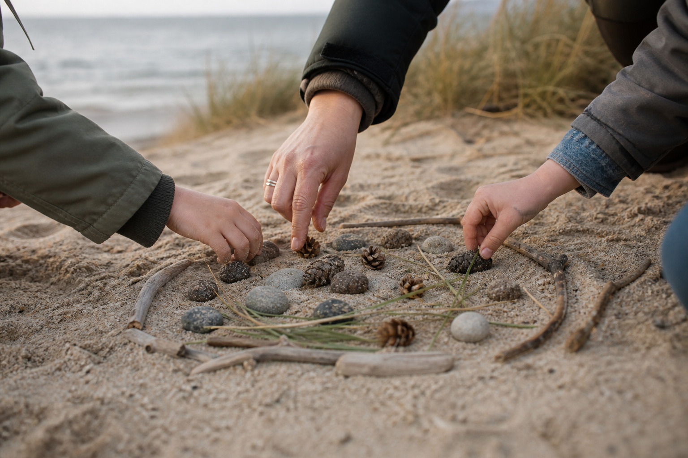

Interest-based learning
Children’s interests become meaningful starting points for exploration and engagement.
Community programme · Five-day residential format
A five-day residential programme designed around each child’s strengths, interests and individual ways of being.
The project
This project is a five-day residential summer camp for autistic children aged 7–11 years.
The camp provides a safe, structured and flexible environment tailored to the individual strengths, interests and support needs of each child.
Activities are delivered both individually and in small groups according to each child’s comfort level, allowing children to engage at their own pace while building confidence, wellbeing and meaningful participation.
Rather than focusing on changing autistic children, the programme focuses on adapting the environment so children can thrive.

Interest-led exploration · Natural environmentsProject philosophy
Autism is understood as a natural form of human diversity rather than a deficit.
The camp is built upon a neuroaffirmative and strengths-based philosophy. These principles are embedded throughout the programme through respectful communication, meaningful activities and supportive relationships.
Programme approach
Activities take place in natural environments, allowing children to experience movement, exploration and sensory regulation at their own pace.
Children’s interests become meaningful starting points for exploration and engagement.
Woodland, beaches and open spaces support curiosity, movement and regulation.
The environment adapts to the child, without pressure to mask or conform.
Music, improvisation and making offer varied forms of expression and connection.
Practical projects centre participation and process rather than performance.
Carefully supported encounters nurture calm, confidence and non-verbal connection.
Project objectives
Emotional wellbeing and self-regulation
Engagement through individual interests
Shared experiences without pressure on social performance
Autonomy, confidence and self-efficacy
Feeling understood, accepted and valued
How the objectives are achieved
Information about each child’s interests, preferences and support needs is gathered before camp. Activities are adapted throughout the week according to engagement and wellbeing.
Predictable days, meaningful choices, visual supports and clear transitions reduce uncertainty while protecting each child’s agency.
Woodland exploration, beach activities, practical investigations and sensory experiences support regulation, curiosity and motivation.
Small projects develop across the week, encouraging creativity, problem solving, exploration and collaboration where appropriate.
Staff use respectful communication, reduced verbal demands, visual supports and alternative communication methods.
Quiet spaces, sensory regulation areas and opportunities to withdraw and return help staff respond proactively to overload.
A high adult-to-child ratio supports trusting relationships built by following interests and responding sensitively.
Music, improvisation, animals and nature support expression, co-regulation, confidence and connection without becoming separate therapies.
The five-day journey
The residential format gives relationships and confidence time to develop naturally, without rushing participation.
Welcome, orientation, familiarisation and finding a comfortable rhythm.
Interest-led discovery across woodland, beach and creative spaces.
Projects deepen, choices expand and trusting relationships grow.
Shared experiences, autonomy and participation at each child’s pace.
Celebrate the process, gather learning and prepare for the transition home.
Why residential?
The five-day format creates opportunities that shorter interventions cannot easily achieve.
Expected outcomes
The project aims to demonstrate how a carefully structured neuroaffirmative environment can improve engagement, emotional wellbeing, confidence, self-regulation, participation and positive autistic identity.
It will also contribute practical knowledge that can inform future community programmes and research.
Project leadership
The programme has been developed by a child psychologist and educator with over fifteen years of experience working with autistic children and academic experience in autism research at the University of Cambridge.
Connect with AVOTS
If you would like to learn more, explore collaboration or support the programme, we would be glad to hear from you.
Start a conversation ↗